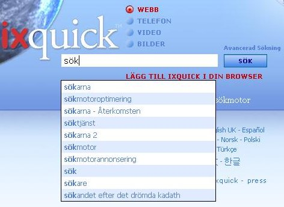

Om sökförslag | ||
|
Q: Hur gör jag för att aktivera sökförslag? A: Du väljer att aktivera sökförslag på sidan 'Inställningar'. Du kan komma direkt till 'Inställningar' från alla andra Ixquick-sidor. |  | |
|
Q: Hur fungerar Ixquicks sökförslag? A: Medan du skriver in frågan jämför vi det du har börjat skriva med en lång lista med tänkbara allmänna söktermer. De mest populära termerna visas i fallande popularitetsordning. | ||
|
Q: Vad är skillnaden mellan Ixquicks sökförslag och andra sökmotorers? A: De flesta andra sökmotorer utnyttjar verkliga användares sökningar för att ta fram sökförslag. Du kan skriva in en fråga och på så vis direkt få information om vad andra söker på. Ixquick däremot är pionjärer när det gäller att garantera användarnas integritet och gör därför inte på det viset. Vi visar förslag som är allmänt relevanta för de frågor du skriver in. | ||
|
Q: Hur kan Ixquick då avgöra vad som ska föreslås? A: Våra förslag kommer från ett antal olika källor, allt från rena lexikon till olika populära fria källor på Internet, t.ex. Wikipedia-sidor. | ||
|
Q: Finns det sökförslag för alla språk? A: Ja, Ixquick levererar förslag på alla språk som vi stöder. | ||
|
Q: Har någon betalat för att komma med bland Ixquicks förslag? A: Nej. Förslagen baseras enbart på vår uppskattning av relativ popularitet. Det finns ingen annonsering inblandad. | ||
|
Q: Jag får förslag på engelska för vissa nyckelord, fast jag använder den svenska sidan. Varför då? A: Väldigt mycket text på nätet finns på engelska. Vår algoritm försöker i första hand ge förslag på det lokala språket, men om vi inte hittar tillräckligt med bra förslag där tar vi även med förslag på engelska. Förslagen på det lokala språket visas naturligtvis alltid först. | ||
|
Q: Kommer jag att få se förslag som har anpassats efter mina sökningar i framtiden? A: Som du säkert vet undviker vi att lagra personlig information om våra användare. Därför kan vi heller inte visa några personliga förslag, eftersom det skulle vara ett hot mot din personliga integritet. | ||
|
Q: Jag vill inte att mitt barn ska få se några olämpliga sökförslag. Vad kan jag göra? A: Vi förstår din oro. Förslagstjänsten fungerar tillsammans med inställningarna för ditt familjefilter för webb/bilder. Om du har filtrerat bort barnförbjudet innehåll försöker algoritmen som tar fram förslagen också att filtrera bort olämpliga söktermer. | ||
|
Q: Sökförslag är aktivt, men inga förslag visas. Vad kan det bero på? A: Kontrollera att du har Javascript aktivt i webbläsaren. Sökförslag fungerar inte utan Javascript. | ||
|
Q: Jag använder inte ”cookies” eller också raderar jag dem regelbundet. Går det att använda sökförslag ändå? A: Ja, självklart. Eftersom vår sökmotor fokuserar på sekretess kan du använda alternativet 'Förbered URL'. Då kan du spara alla inställningar i en webbadress, i stället för att använda en cookie. Knappen 'Förbered URL' finns längst ned på sidan 'Inställningar'. |
||